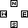

Texel Documentation - Controllers
Enumeration
TXL_CtrlButton
CtrlN
CtrlS
CtrlE
CtrlW
CtrlStart
CtrlSelect
CtrlL
CtrlR
CtrlA
CtrlB
CtrlX
CtrlY
Enumeration representing buttons on a controller.
CtrlN, CtrlS, CtrlE, and CtrlW represent the face buttons on a controller, named by their position.

CtrlA, CtrlB, CtrlX, CtrlY will attempt to match the buttons that have similar labels.
Keyboard Mappings
CtrlN and CtrlY: K
CtrlS and CtrlA: Space
CtrlE and CtrlB: L
CtrlW and CtrlX: Left Shift
CtrlStart: Return/Enter
CtrlSelect: Tab
CtrlL: J
CtrlR Semicolon
Classes
TXL_Controller, TXL_Keyboard
Class representing a controller. TXL_Controller takes input from a game controller, while TXL_Keyboard takes input from a keyboard.
bool TXL_Controller::init()
Checks for available controllers to assign to this object.
Returns 0 if a usable controller was found, 0 otherwise.
TXL_Controller *ctrl = new TXL_Controller;
if (!ctrl->init()) return 0;
void TXL_Controller::end()
Closes the controller being used.
TXL_Controller *ctrl;
// other code
ctrl->end();
bool TXL_Controller::isKeyboard()
Returns 0 for TXL_Controller objects, or 1 for TXL_Keyboard.
bool TXL_Controller::buttonPress(TXL_CtrlButton button)
Returns 1 if button was pressed, 0 otherwise.
TXL_Display display;
TXL_Controller *ctrl;
// other code
if (ctrl->buttonPress(CtrlA)) display.setFill(1, 1, 1);
else display.setFill(0, 0, 0);
bool TXL_Controller::buttonClick(TXL_CtrlButton button)
Returns 1 if button just went from not being pressed to being pressed, 0 otherwise.
TXL_Controller *ctrl;
// other code
if (ctrl->buttonClick(CtrlA)) ctrl->rumble(1.0f, 250);
float TXL_Controller::leftJoyX(), float TXL_Controller::leftJoyY()
Returns a joystick axis. The D-Pad will take priority over the left joystick. In the case of TXL_Keyboard, the WASD keys control the left joystick.
Joystick axes are constrained to the range (-1.0f, 1.0f).
int x, y;
TXL_Texture texture
TXL_Controller *ctrl;
// other code
x += 4 * ctrl->leftJoyX();
y += 4 * ctrl->leftJoyY();
texture.render(x, y, atan2(ctrl->rightJoyY(), ctrl->rightJoyX()));
float TXL_Controller::mouseX(), float TXL_Controller::mouseY()
Returns the position of the controller's mouse. For TXL_Controller, the right joystick moves the mouse. For TXL_Keyboard, the physical mouse is used.
Values for the mouse inside the window are (0.0f, 640.0f) for the x position, and (0.0f, 360.0f) for the y position.
TXL_Controller *ctrl;
// other code
TXL_RenderQuad(ctrl->mouseX(), ctrl->mouseY(), 8.0f, 8.0f, {1.0f, 1.0f, 1.0f, 1.0f});
int TXL_Controller::getId()
Get the ID of the controller. This number represents the order it was plugged in to the computer.
void TXL_Controller::rumble(float power, int time)
Makes the controller vibrate if possible. Power is a number between 0 and 1, and time is the length of the rumble in milliseconds
TXL_Controller *ctrl;
// other code
ctrl->rumble(float(ctrl->leftJoyY() + 128) / 256.0f, 17);
Go back